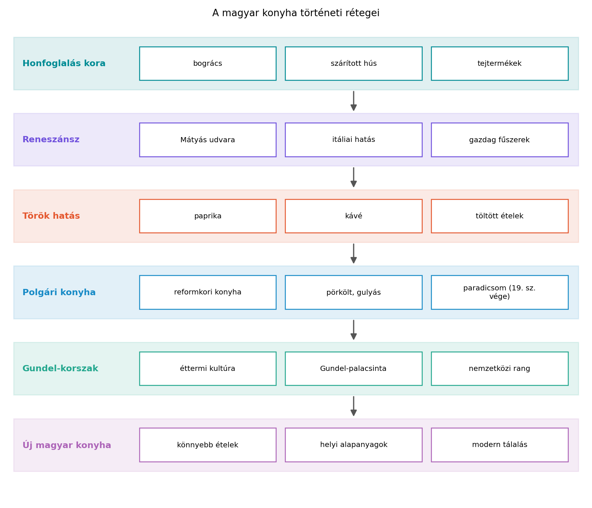

Egy budapesti étterem konyháján a séf a heti menü előkészítését végzi. A hétfői menü marhapörkölt tarhonyával. A séf nem a húst kezdi el darabolni, hanem először a pörköltalapot készíti el: zsírban hagymát pirít, paprikát kever hozzá, majd félreteszi. Ez az alap adja a szaft színét, illatát és mély ízét. Ha ez a lépés rossz, az egész pörkölt keserű lesz, az étel kifogásolható. A magyar konyha technikái ilyen apró, de meghatározó lépésekből állnak. Aki megérti ezeket, az nem receptet tanul meg, hanem gondolkodásmódot.
Definíció. A magyar konyha a Kárpát-medencében kialakult, a paraszti, polgári és úri konyha hagyományait ötvöző, a helyi alapanyagokra és a jellegzetes fűszerezésre (különösen a fűszerpaprikára, hagymára, tejfölre) épülő ételkészítési hagyomány. Nem rögzített receptgyűjtemény, hanem élő rendszer: a történelem során folyamatosan változott, rétegei ma is felismerhetők.
A magyar konyha fejlődése jól szemléltethető rétegekkel. Az alábbi ábra a fő történeti rétegeket mutatja.

Honfoglalás kora és a középkor. A honfoglaló magyarok konyhája nomád, pásztorkodó jellegű volt: bográcsban főztek, húst szárítottak, sóztak, tejtermékeket készítettek. A letelepedés után a földművelés bővítette az alapanyagokat: búza, rozs, köles, borsó, lencse, káposzta, hagyma, alma, szilva. A fűszerhasználat só, esetleg méz, de a paprika még nem volt ismert. (ellenőrizendő: a honfoglalás kori étkezés régészeti leletek alapján változhat.)
Reneszánsz. Mátyás király udvarában (15. század) a magyar konyha találkozott az itáliai reneszánsz konyhával. A főúri konyhában megjelentek az olyan fogások, mint a fűszeres, gyümölcsös húsok, a fűszeres borlevesek és a sáfrányos ételek. A reneszánsz konyha a látványos tálalásra és a gazdag fűszerezésre is ügyelt. Az olasz hatás a tészták és a mártások terén is érvényesült.
Török hatás. A török hódoltság (16–17. század) idején a balkáni–török közvetítéssel érkezett a fűszerpaprika (eredetileg amerikai növény) és a kávé. A paprika eleinte dísznövény volt, később fűszerként terjedt el; az édes, porrá őrölt fűszerpaprika a 18–19. században vált a magyar konyha meghatározójává. A török konyha a töltött ételek, a réteges húsos egytálételek és az édes-savanykás ízek iránti vonzalmat is erősítette.
Polgári konyha és reformkori konyha. A 18–19. században a városi polgárság konyhája egyesítette a paraszti alapanyagokat és a főúri konyha technikáit. A reformkorban (19. század első fele) a magyar nemzeti identitás része lett a magyar konyha: ekkor terjedtek el a pörkölt, a gulyás, a paprikás és a tejfölös ételek az írott szakácskönyvekben. A paprikás ételek ekkor váltak a középosztály asztalán is mindennapossá. A paradicsom (amerikai eredetű, Európában eleinte dísznövény) élelmiszerként a 19. század végétől terjedt el (pl. lecsó; ellenőrizendő: gasztronómiatörténeti forrás).
Gundel-korszak. Gundel Károly (1883–1956) a 20. század első felének legismertebb magyar vendéglőse volt. A Gundel étterem az éttermi magyar konyhát nemzetközi színvonalra emelte: a hagyományos magyar ételeket könnyebb, eleganciával tálalt fogásokkal egészítette ki, mint a Gundel-palacsinta. (Ellenőrizendő: a Gundel által fémjelzett étlap és technikák pontos listája.) A korszak a magyar vendéglátás aranykora volt.
Új magyar konyha. Az 1980-as évektől megjelent az „új magyar konyha” irányzata: fiatal séfek a hagyományos ételeket kisebb zsiradékkal, több friss zöldséggel, rövidebb hőkezeléssel és korszerű tálalással készítik. A mozgalom nem tagadja a klasszikus alapokat, hanem azokra épít, és helyi, szezonális alapanyagokkal dolgozik.
A fenti korszakokat a következő táblázat fogja össze:
| Korszak | Körülbelüli időszak | Fő hatás | Jellegzetes elemek |
|---|---|---|---|
| Honfoglalás kora | 9–10. század | nomád, pásztorkodó | bogrács, szárított hús, tejtermékek |
| Reneszánsz | 15. század | itáliai, főúri | fűszeres húsok, tészták, gazdag tálalás |
| Török hatás | 16–17. század | paprika, kávé | töltött ételek, egytálételek |
| Polgári konyha | 18–19. század | nemzeti identitás, városi konyha; a paradicsom a 19. század végétől terjed (ellenőrizendő) | pörkölt, gulyás, tejfölös ételek |
| Gundel-korszak | 20. század eleje | éttermi színvonal, nemzetközi | Gundel-palacsinta, elegáns magyar fogások |
| Új magyar konyha | 1980-as évektől | könnyebb, modernebb, helyi | modernebb klasszikusok, szezonális fogások |
Megjegyzés: az évszámok és a besorolások tanulási értékek; a pontos korszakhatárok történészi megítélése változhat (ellenőrizendő: korszakhatárok).
A magyar konyha alapja négy jellegzetes technika, amelyek gyakran együtt jelennek meg.
1. Zsírban pirított hagyma. A magyar konyha sok étel (pörkölt, gulyás, lecsó, főzelék) alapja a zsírban lassan üvegesre vagy enyhén aranybarnára pirított vöröshagyma. A hagymát nem szabad gyorsan, magas lángon barnára sütni, mert keserű lesz. A zsír (sertészsír, de lehet növényi olaj) egyenletesen adja át a hőt, és kihozza a hagyma édes, mély ízét. Szabály. A hagymát mindig a zsír felmelegedése után tesszük a lábasba, közepes lángon kevergetjük, amíg üveges nem lesz, majd adjuk hozzá a következő alapanyagot.
2. Fűszerpaprika. A magyar konyha lelke az édes, porrá őrölt fűszerpaprika. A paprika zsírban oldódó szín- és aromaanyagokat tartalmaz. Szabály. A paprikát soha nem szabad forró zsírban pirítani, mert a magas hőmérséklet megégeti, és az étel keserű lesz. A gyakorlatban a hagymás zsírt lehúzzuk a tűzről vagy félrehúzzuk, hozzákeverjük a paprikát, majd azonnal felöntjük kevés vízzel vagy alaplével, és csak utána folytatjuk a főzést.
3. Tejföl. A tejföl a magyar konyha jellegzetes sűrítő, ízesítő és savanyító anyaga. Hidegen keverve, habarással, vagy az ételbe közvetlenül dolgozva ad krémes állagot. Tejfölös habarással sűrítik a székelykáposztát, a paprikás csirkét, a gombapörköltet, de a tejföl önmagában is mártás lehet. Higiénia. A tejföl gyorsan romló nyersanyag, mindig hűtve kell tartani, és hőkezelés előtt folyamatos kevergetés mellett, lassan melegíteni, hogy ne csapódjon ki.
4. Rántás. A rántás (roux) liszt és zsír vagy olaj hőkezelésével készül. A magyar konyhában világos, zsemleszínű vagy barna rántást egyaránt használnak. A világos rántás a fehér mártásokhoz és főzelékekhez, a zsemleszínű a főzelékekhez, mártásokhoz és egyes levesekhez (pl. bableves), a barna a sötét mártásokhoz és a vadas ételekhez való. A pörköltet és a gulyást nem rántjuk be. Szabály. A rántást folyamatosan keverni kell, hogy a liszt ne csomósodjon és ne égjen le. A forró rántást hideg vagy langyos folyadékkal (a kihűlt rántást forró folyadékkal) engedjük fel, fokozatosan, habverővel folyamatosan keverve – a rántás és a folyadék ne legyen egyszerre forró, különben csomósodik.
Ezek a technikák egymásra épülnek. A pörköltalap például a zsírban pirított hagymát, a paprikát, és gyakran egy kevés paradicsomot és zöldpaprikát használ; a tejfölt (pl. paprikásnál) a végső befejezésnél, habarásként adják hozzá; a pörköltet és a gulyást nem rántjuk be.
Továbbvitt eredmény. A pirított hagymás-paprikás alap, a tejfölös habarás és a rántás technikája a Tájjellegű ételkülönlegességek alfejezetben is visszatér, amikor a pörkölt, a paprikás csirke vagy a halászlé helyi változatait készítjük. A most megtanult pörköltalap a pörkölt, a gulyás és a paprikás közös alapja.
A magyar konyha legismertebb ételei:
Fontos: a „hungarikum” kifejezés nem minden magyar ételre vonatkozik automatikusan. A Hungarikumok Gyűjteményébe került kiemelkedő nemzeti értékek köre jogszabályban meghatározott; a fenti listából egyes ételek (pl. a kürtőskalács, a tokaji bor, a pálinka) hivatalosan is hungarikumnak minősülnek (a gulyásleves a Hungarikumok Gyűjteményében szerepel, de ez az aktuális listával egyeztetendő), mások (pl. a pörkölt) a magyar konyha jellegzetességei, de a hivatalos minősítést ellenőrizni kell (ellenőrizendő: hungarikum-minősítések). Az étlapon ne nevezzünk hungarikumnak olyan ételt, amely nem szerepel a Hungarikumok Gyűjteményében; a „magyaros” jelző nem állít hivatalos védettséget.
Példa. Egy étterem étlapján a „Magyaros marhapörkölt tarhonyával” szerepel. A vendég rákérdez, miért „magyaros”. A felszolgáló elmondja, hogy zsírban pirított hagymával, fűszerpaprikával és tarhonyával készül, és hogy a tarhonya hagyományos magyar tészta. Ez pontos tájékoztatás, nem állít hivatalos védettséget.
A mai magyar konyha nem állt meg a klasszikus recepteknél. A séfek a hagyományos technikákat megtartják, de a zsiradék mennyiségét csökkentik, több friss zöldséget használnak, és a tálalást korszerűsítik. A hagyományos pörkölt ma már készülhet kevesebb zsírral, zöldfűszeres befejezéssel, friss salátával tálalva. Az „új magyar konyha” célja nem a hagyomány elvetése, hanem az, hogy a magyar ételek a mai vendégek igényeihez is illeszkedjenek: könnyebbek legyenek, ne legyenek túl sósak, és az allergéneket is pontosan kezeljék.
A pörköltalapot gyakran nagyobb mennyiségben készítik előre. A technológiai lap 10 adagos anyaghányadát adja meg. Ha a heti menühöz 25 adag szükséges, akkor a szorzószámot használjuk.
Számítás. Adott a 10 adagos anyaghányad: sertészsír 200 g, tisztított vöröshagyma 600 g, édes fűszerpaprika 30 g, só 20 g, zöldpaprika 200 g, paradicsom 100 g, víz vagy alaplé 500 ml. Keresett: 25 adaghoz szükséges mennyiségek. A szorzószám
Behelyettesítve:
Ellenőrzés: a szilárd anyagok össztömege 25 adagra: , ami adagonként . Ehhez jön a folyadék, adagonként . Ez egy sűrű, jól beforralható pörköltalap, ami a feltétnek megfelel. Az adatok tanulási példák, az üzemi receptúra a mérvadó.
Adagszám: 10 adag, adagsúly: 150 g (besűrített alap, hús nélkül).
Anyaghányad-táblázat
| Nyersanyag | Mennyiség 10 adagra | Megjegyzés |
|---|---|---|
| Sertészsír | 200 g | lehet növényi olaj is |
| Vöröshagyma | 600 g | tisztítva, apróra vágva |
| Édes fűszerpaprika | 30 g | por |
| Só | 20 g | jódozott konyhasó |
| Zöldpaprika | 200 g | magtalanítva, kockázva |
| Paradicsom | 100 g | kockázva |
| Víz vagy alaplé | 500 ml | lehet csontalaplé |
Allergének: a 14 jelölésköteles allergén közül ez a változat egyiket sem tartalmazza. Allergén. Ha a zsírt vajjal pótolod, akkor a tej allergén lesz; ha az alaplevet készen vásárolt alapléből készíted, ellenőrizni kell a címkét, mert az tartalmazhat glutént, zellert, szóját vagy tejet. A keresztszennyeződés elkerülésére használj tiszta edényt és külön merőkanalat.
Eszközök és gépek: lábas (3–5 l), fakanál, kés, vágódeszka, mérleg, mérőedény, maghőmérő.
Előkészítés (számozott lépések) 1. Mosd meg a zöldpaprikát és a paradicsomot; töröld szárazra. 2. Hámozd meg és aprítsd finomra a vöröshagymát. 3. Magtalanítsd a zöldpaprikát, vágd kis kockákra; a paradicsomot is kockázd. 4. Mérd ki a zsírt, a paprikát, a sót és a folyadékot. 5. Higiénia. Kézmosás után kezdj dolgozni; a nyers húst ne érintsd ugyanazzal az eszközzel, amíg az alap készül.
Elkészítés (számozott lépések) 1. Melegítsd fel a zsírt a lábasban közepes lángon. Ne hevítsd túl, a zsír ne füstöljön. 2. Add hozzá a hagymát, és kevergetve pirítsd üvegesre, illetve enyhén aranyszínűre. Ez 5–8 percig tart; ha a hagyma barnulni kezd, vedd lejjebb a hőt. 3. Húzd le a lábast a tűzről, vagy tedd félre. Kritikus pont. A fűszerpaprika érzékeny a magas hőmérsékletre. A zsír hőmérséklete ekkor kb. 100 °C alatt legyen (a hagyma leve már nem sistereg hevesen); ha túl forró, a paprika megég. (Ellenőrizendő: szakmai forrás.) 4. Szórd a hagymás zsírra a fűszerpaprikát, és azonnal keverd el, hogy minden szem zsírral bevonódjon. 5. Add hozzá a zöldpaprikát és a paradicsomot, keverd el, majd sózd. 6. Öntsd fel a vízzel vagy alaplével. Forrald fel, majd kis lángon, fedő nélkül, 10–15 percig főzd, hogy a zöldségek szétfőjenek, és az ízek összeérjenek. A végső állag sűrű, mártásszerű legyen. 7. Kritikus pont. Ha az alapot hússal együtt készíted, a húst a felöntés előtt (a 6. lépés előtt) add hozzá, és biztonságosan párold: a hús maghőmérséklete legalább 75 °C legyen (ellenőrizendő: HACCP-terv). A pörköltalap önmagában forralással hőkezelt, de hússal együtt a hús CCP.
Készentartás és tálalás - Azonnali felhasználás: forrón, 63 °C felett tartsd (ellenőrizendő: HACCP-terv). - Tárolás: ha nem használod fel azonnal, hűtsd vissza jeges vízfürdőben vagy sokkolóban (tanulási érték: 2 órán belül 20 °C alá, további 4 órán belül 5 °C alá; ellenőrizendő: NÉBIH-útmutató). A gyors hűtéshez terítsd lapos edénybe, vagy használj hűtőrudat. Lefedve, hűtőben 1–2 napig tárolható (ellenőrizendő: üzemi HACCP-terv). - Tálalás: a pörköltalapot hús vagy zöldség alapjául használd; tálalható tarhonyával, galuskával, főtt burgonyával.
Minőségi követelmények - Szín: élénk, mély vörös, a paprika nem égett, nem barna. - Állag: sűrű, mártásszerű, a zöldségek szétfőttek. - Íz: harmonikus, enyhén édes a hagymától, fűszeres a paprikától, nem keserű, nem túl sós. - Illat: paprikás, hagymás, étvágygerjesztő.
Tipikus hibák és javításuk - Hiba: A paprika megégett, az alap keserű. Ok: túl forró zsírba került vagy túl magas lángon hagyták. Javítás: új alapot kell készíteni; a keserű paprikát nem lehet javítani. - Hiba: A hagyma barnára sült, az étel égett ízt kapott. Ok: túl magas hő vagy elhanyagolt keverés. Javítás: ha még nem odaégett, azonnal hűteni kell, és a sötét részt eltávolítani; ha megégett, új alap szükséges. - Hiba: Az alap túl híg. Ok: túl sok folyadék vagy rövid forralás. Javítás: tovább forralni, vagy kevés rántással sűríteni (de ez megváltoztatja a karakterét). A pörköltalapot jobb alapból sűrűbbre készíteni.
A pörköltalap és a magyar konyha jellegzetes ételeinek ellenőrzése érzékszervi és mérhető jelekkel történik (részletesen: a technológiai lap minőségi követelményei).
Egy kisvárosi étterem séfje a hétvégére 80 adag pörköltalapot készített előre. A hagymát zsírban megpirította, a paprikát hozzákeverte, majd a lábast félretette. Azonban a másnapi főzésnél az alap keserűnek bizonyult. A séf visszakereste a hibát: előző nap a hagymás zsírt túl magas lángon hagyta, és a paprika már akkor megégett, amikor belekeverte; a keserű íz csak a hús hozzáadása után érvényesült. Az ételt ki kellett dobni, és új alapot készíteni. A tanulság: a paprikát mindig lehúzott vagy mérsékelt hőfokú zsírba keverjük, és azonnal felöntjük folyadékkal. A paprika hozzáadása minőségi kritikus pont (nem CCP, mert nem élelmiszer-biztonsági veszély): a hőfokot ellenőrizni kell, és a hibás tételt azonnal el kell különíteni.
A válaszok a Megoldások elején találhatók.
1. feladat (A) Sorold fel a magyar konyha négy jellegzetes technikáját, és mindegyikhez egy-egy példaételt!
2. feladat (A) Egészítsd ki a mondatot: A pörköltalap alapja a ______ -ban pirított hagyma, a ______ és a ______. A paprikát a tűzről lehúzva, ______ zsírba keverjük, hogy ne égjen meg.
3. feladat (B) Számítsd ki a 10 adagos pörköltalapból 18 adaghoz szükséges mennyiségeket: zsír 200 g, hagyma 600 g, paprika 30 g, só 20 g. Írd le a képletet, a behelyettesítést és az eredményt mértékegységgel!
4. feladat (B) Egy szállodai konyhán a pörköltalapot előző nap készítik. Melyek a hűtés kritikus pontjai? Fogalmazz meg legalább négy higiéniai szabályt!
5. feladat (C) Tervezz egy hagyományos magyar menüsort (leves, főétel, desszert) egy tavaszi napra, ahol a főétel pörkölt. Jelöld, melyik ételnél milyen jellegzetes technikát alkalmazol, és milyen allergénekre kell figyelmeztetned a vendéget!
6. feladat (D) Hajtsd végre a pörköltalap receptjét otthon vagy tankonyhán. Dokumentáld: a hagyma pirítási időtartamát, a paprika hozzáadásakor a zsír becsült hőmérsékletét (érzékszervi jel), a forralási időt, és a kész alap tömegét. Írd le, milyen hibát követtél el (ha volt), és mit javítanál legközelebb!
Önellenőrzés – válaszok
Feladatok megoldása (lépésenként)
A magyar konyha a Kárpát-medencében kialakult, rétegesen fejlődő ételkészítési hagyomány. Történeti rétegei: honfoglalás kora (bogrács, szárított hús), reneszánsz (főúri, itáliai hatás), török hatás (paprika, kávé, töltött ételek), polgári konyha (nemzeti identitás, pörkölt, gulyás; a paradicsom a 19. század végétől), Gundel-korszak (éttermi színvonal), új magyar konyha (könnyebb, modernebb). Négy jellegzetes technika: zsírban pirított hagyma, fűszerpaprika, tejföl, rántás. A pörköltalap ezek közül a pirított hagymát és a paprikát használja; a paprikát lehúzott, mérsékelt hőfokú zsírba keverjük, hogy ne égjen meg. A pörköltalapot forrón 63 °C felett tartjuk, vagy 2 órán belül 20 °C alá, további 4 órán belül 5 °C alá hűtjük (tanulási érték, ellenőrizendő: HACCP-terv). A hungarikum minősítés jogi fogalom, ezért az étlapon pontosan kell fogalmazni. Továbbvitt eredmény: A pirított hagymás-paprikás alap, a tejfölös habarás és a rántás a Tájjellegű ételkülönlegességek alfejezetben a helyi pörkölt, paprikás és gulyás változatok alapja lesz.
A fejezet klasszikus konyhatechnológiai és művelődéstörténeti ismereteket tanít. A történeti korszakhatárok és a hungarikum-minősítések (pl. kürtőskalács, pálinka, téliszalámi) a Hungarikumok Gyűjteménye és a hatályos jogszabály alapján ellenőrizendők. A hőmérsékleti és hűtési értékek (63 °C készentartás, kétlépcsős visszahűtés 2 óra/20 °C és további 4 óra/5 °C, 75 °C maghőmérséklet) tanulási értékek; az üzemi HACCP-terv és a NÉBIH-útmutató szerint ellenőrizendők. Az anyaghányadok és a pörköltalap elkészítési lépései tanulási példák, az üzemi receptúra a mérvadó. Az allergénekre vonatkozó megállapítások az 1169/2011/EU rendelet 14 allergénjére épülnek; a pontos lista a kiadás előtt ellenőrizendő.